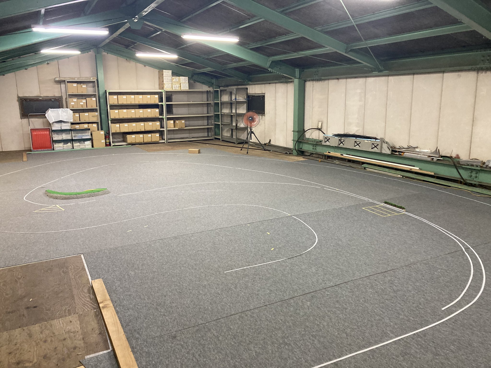
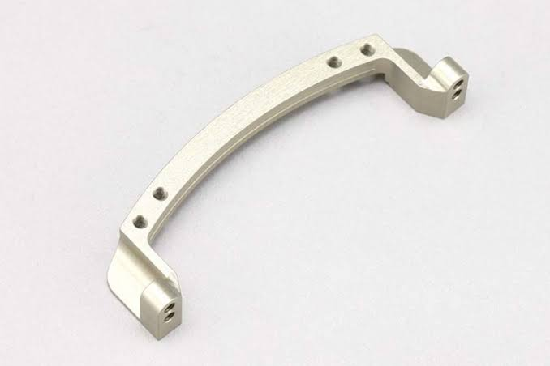
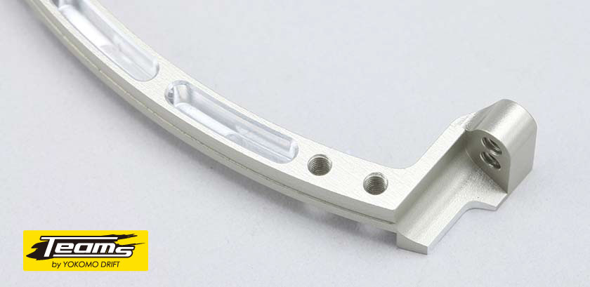

全日本チャンピオンになるための活動
最善を尽くすための本番までのアクション
緊急事態宣言が開けることによって2021年度のラジコンカー全日本選手権の開催が発表され、今年はセントレア空港にて開催される事が発表されました。
今年度は、空港内に特設でサーキットが作られ、カーペットコースで開催されます。カーペットコースは、日本国内に非常に少なく、練習ができません。カーペットコースで練習し、車のセッティングを出す事が、全日本選手権で優勝するための方法であると考え行動に起こしました。

本番のコースが11月頭に発表されました。この図をもとに、精巧に本番コースを制作し、誰よりも本番の状況に似た状況で練習する事が必要だと考え、すぐに行動に移しました。
カーペットコース

某県某所のラジコンショップに二階に実寸大のサーキットを制作しました。
製作するにあたって、本番の状況に近づけ完璧に仕上げるために、コーナーのRの角度を同じにしました。公表された画像を１０倍にコピーし、そこから各コーナーの角度を割り出し、それぞれのRの角度を合わせることにしました。
本番で使われるであろうカーペットを入手し、本当に完璧までに行動を起こしました。
こだわり
・本番と同じカーペットを使用し、公表されているコースと同じレイアウトを再現
・セントレア空港ではカーペットの上にカーペットを引いて開催されるため、路面が沈みやすいので、コースもカーペットマットを下にひいてから、カーペットを引くことで忠実に再現
全日本に向けての製品開発
今回も自分にできる能力の中での製品開発に取り組みました。
コンペティションを追求する
今回は全日本選手権で優勝するために、コンペティションを追求しました。リアル感を追求するテーマでしたが、今月だけは少しだけ方向性をずれた方向ですみません。
カーペットはパワーが路面に吸収されやすく、スピードを上げるのは非常に難しいです。
そのため、軽量化つ、高剛性のマシン作りが重要であることに気づきました。そのため、それに対応するためのパーツ制作を一点行いました。
今回の競技は単純に速さを競うものではなく、走行の美しさを競うというものため、実車と同じ動きができるようにフロントの軽量化を行いました
☆剛性を保ったまま、軽量化を行う☆
スライドラックの軽量化

(上加工前、下加工後
)

今回も切削機を用いて、既存の製品を制作することにしました。
完全にくり抜いて、しまうと剛性が落ちてしまうため、0,5mmのアルミ部分を残して、くり抜くことにしました。
合計で３gの軽量化をしました。
)